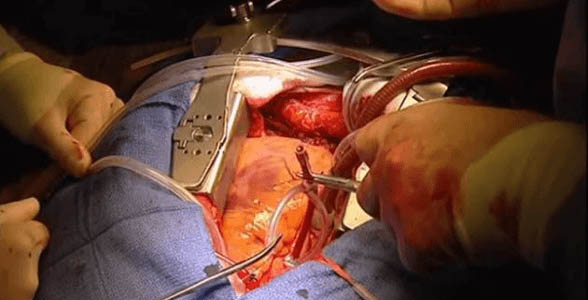
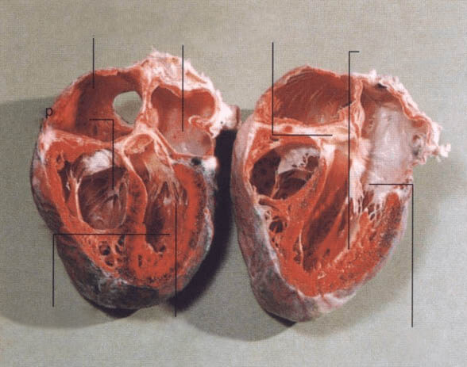
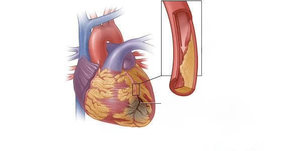
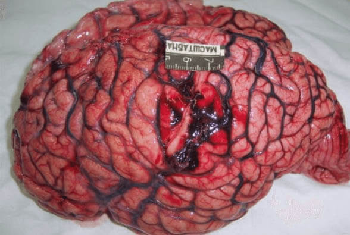
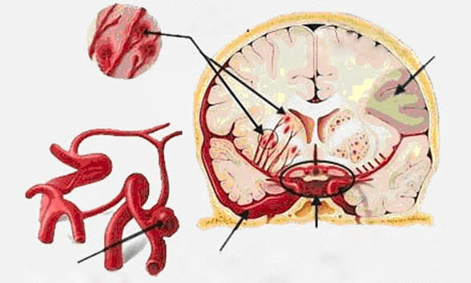
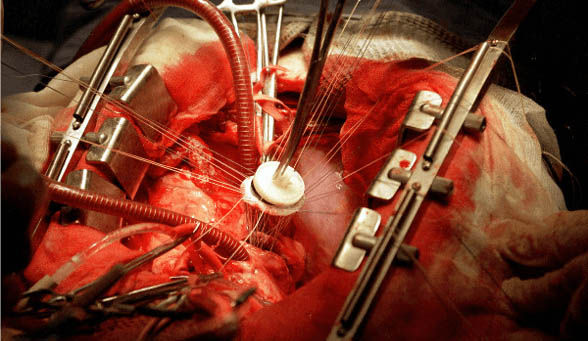
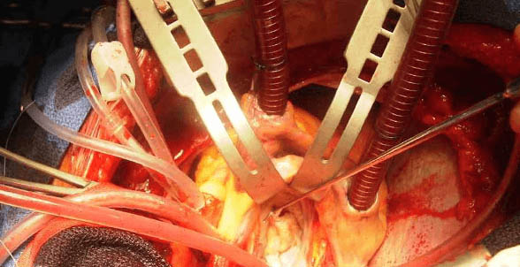

На въпросите отговаря Доктор Стоян Любенов - Завеждащ кардиологично отделение, доктор на медицинските науки и практикуващ кардиолог, спасил хиляди човешки животи. Признато светило в областта на кардиологията в страната.
Запомнете: Вече можете да излекувате проблемите с кръвното налягане! Отсега нататък всеки има възможност да нормализира кръвното си налягане и да избегне инфаркта или инсулта.
Преди месец започна целевата програма „България без инфаркти“, насочена да се бори с инфарктите и инсултите, причинявани от резките промени с кръвното налягане. Всеки човек може да получи уникалния препарат, стабилизиращ кръвното веднъж завинаги, при това без да натоварва прекомерно бюджета си. Днес ще поговорим за тази програма с един от водещите кардиолози у нас, доктор Стоян Любенов, който се съгласи да разговаря с екипа ни след участието си в популярно телевизионно здравно предаване (на тема „Прогрес в превенцията на инфарктите в България“).
Водещ Мартина Бакалова
М. Бакалова: „Здравейте, доктор Любенов. Кажете, вярно ли е твърдението, че „играещото“ кръвно налягане е „задължителен“ спътник на хората, прехвърлили средна възраст?“
Д-р Стоян Любомиров: Здравейте, г-жо Бакалова! Не, това твърдение изобщо не отговаря на истината. Задължителният спътник на хората в напреднала възраст е прекомерното доверие в лекарите, които цял живот ви лекуват, но така и не успяват да ви излекуват. В действителност резките промени в кръвното налягане (хипертония) и голям брой други заболявания са удивително податливи на лечение, независимо от възрастта на пациента. Това не е някакво чудо, а постижение на съвременната наука.
При това, ако човек знае тайната и проявява известна дисциплина, той много бързо и в домашни условия може да се избави от оплакванията. Това правят хиляди мои пациенти, които не ходят по лекари и не провеждат постоянно всякакви ненужни, скъпоструващи изследвания.
Тайната е следната – възстановявайки правилния приток в кръвоносните съдове, ние постигаме пълно излекуване на заболяването!
М. Бакалова: „Но нали се смята, че след 40-годишна възраст това е почти невъзможно?“
Доктор Любенов: Това са пълни глупости! Аз самият се изтръгнах от прединфарктно състояние, породено от хипертония, а това е по-страшно от предела на 40-те.
М. Бакалова: „А спасявали ли сте пациенти в подобно състояние?“
Доктор Любенов: Да, неведнъж. Но мнозинството от моите пациенти са най-обикновени хора над 40 години, при които проблемите с кръвното са се появили „с възрастта“. Те идват в кабинета с много сходни проблеми: зачестяване на световъртежа и главоболието, нарушения в паметта, стенокардия, болка в сърдечната област, постоянна отпадналост и умора, проблеми с бъбреците.
Много от тях са в състояние, което предшества прединфарктното и се нуждаят от спешна хоспитализация и медицинска помощ. Най-страшното е, че човек често дори не подозира за сериозността на състоянието си. А в това време се намира на практика на ръба на смъртта.
М. Бакалова: „Лично вие как преценявате опасността от играещото кръвно налягане (хипертония)?“
Доктор Любенов: Проблемите с кръвното или както вие се изразихте правилно, хипертонията, са сериозна заплаха, пред която е изправено човечеството и която се проявява в стремителен ръст на заболеваемостта и висока смъртност. Само за последните 20 години хипертонията застана начело на причините за смъртност на населението. В тази връзка, заболяването е сред най-приоритетните задачи за лекарите по цял свят.
на пациентите
М. Бакалова: „Какви са симптомите, по които човек може да разбере, че има хипертония?“
Доктор Любенов: Нека най-напред да изброим накратко причините за заболяването. Основната причина за високото кръвно налягане (хипертония) е стесняването на малките кръвоносни съдове. Вследствие на това се повишава артериалното налягане, което води до огромно натоварване за целия организъм на пациента. В резултат на това се появяват най-различни усложнения. Несъмнено най-опасният от тях са инфарктите и инсултите, които не могат да се причислят към обичайните усложнения, тъй като по правило са с летален изход.
Ако говорим за симптомите на хипертонията, те са:
- главоболие;
- световъртеж;
- слаб, ускорен сърдечен ритъм (тахикардия);
- изпотяване;
- зачервяване на лицето;
- усещане за пулсиране в главата;
- треперене;
- тревога;
- отслабване на паметта;
- вътрешно напрежение;
- раздразнителност;
- понижена работоспособност;
- мержелеене пред очите;
- отичане на клепачите и подпухване на лицето сутрин;
- отичане на ръцете и изтръпване на пръстите.
Изброените по-горе оплаквания могат да възникват периодично, от време на време, с периоди на затихване. След пълноценна почивка те затихват за известно време. За съжаление, това все още не е повод за оптимизъм, а само проявление на особеното коварство на хипертонията.
Сред водещите причина за заболяването са:
- наднорменото тегло;
- нарушения във функцията на щитовидната жлеза или бъбреците;
- неправилно хранене;
- липса на физическа активност;
- генетична предразположеност;
- тютюнопушене и употреба на алкохол;
- възраст 40+;
- чест стрес.
М. Бакалова: „Какво са последиците от високото кръвно налягане (артериална хипертония)?“
Доктор Любенов: Коварството на болестта се състои в това, че в началото тя се развива постепенно. Но нанася удара без предупредителен сигнал. Друг важен фактор е, че усложненията на хипертонията се развиват светкавично и са най-често смъртоносни. Крайно рядко някой успява да окаже помощ на пациент с инфаркт. Ако говорим по-подробно, то най-разпространените усложнения вследствие на високото кръвна налягане са:
- внезапен инфаркт на миокарда;
+ покажи + покажи 
- инсулт и аневризми;
+ покажи 
- неочаквано запушване на сърдечните съдове (налага спешна операция);
+ покажи + покажи 
М. Бакалова: „Как да избегнем фатален изход и да възстановим правилния приток на кръв в съдовете след 40-годишна възраст?“
Доктор Любенов: До неотдавна аз лекувах пациентите посредством комплекс от специална диета, упражнения и препарати. В основни линии, лечението се провеждаше стационарно. Естествено, този вариант не подхождаше на всеки. Но напредъкът в съвременната медицина в България вече ни позволява да изведем на ново ниво лечението на хипертония, като ни позволява да изпреварим колегите ни в чужбина.
Ако говорим по-конкретно, кардиолозите и изследователите в тази област проведоха мащабни клинични изпитвания на един препарат от ново поколение, който е способен да излекува хипертонията (високото кръвно налягане) веднъж завинаги. Новата методика позволява един вид „препрограмиране“ на имунните клетки, отключвайки процес на регенерацията на кръвоносните съдове, като ги очиства от холестерина и възстановява нормалното кръвообращение. Това означава, че кръвоносната система се възстановява напълно. Естествено, при това всички проблеми с кръвното налягане изчезнат.
Нашата изследователска група първа в България получи сертифициран достъп до този препарат от ново поколение. Признавам ви, че първият път, когато чух за него, аз просто се разсмях, тъй като не вярвах в неговата ефективност. Но бях поразен в края на изпитанията - 4 567 човека се излекуваха напълно от проблемите с кръвното, тоест 93,6% от всички участници в клиничното изпитване, докато 5.8% почувстваха значително подобрение и едва при 0.6% не беше забелязано подобрение.
М. Бакалова: „Какво представлява този препарат? Разкажете ни по-подробно?“
Доктор Любенов: Става дума за уникалният препарат „ ". Действието на това средство е такова, че в съвсем кратки срокове, буквално за 1 курс да забравите за проблемите с кръвното течение на два месеца да се излекува дори най-сложният случай, спирайки развитието на заболяването окончателно. Препаратът помага ефективно дори в онези случаи, когато положението е напълно запуснато.

Инвестициите в разработването на този препарат възлизат на стойност над 195 милиона долара. Сега средството се разпространява само на територията на България, като при това в рамките на специална програма може да се закупи с 50% намаление! Пред нас стои задачата на първо място да подсигурим населението на страната ни, така че засега не се предвижда износ в чужбина
М. Бакалова: „И как точно действа този чудотворен препарат?“
Доктор Любенов: Тук няма никакво чудо, а само сериозна наука. Препаратът отключва особен род „препрограмиране“ на имунните клетки, които след известен период от време възстановяват и пречистват кръвоносните съдове, решавайки проблема с високото кръвно налягане и същевременно избавят пациента от цял куп съпътстващи проблеми с кръвоносната система. Това е иновативен препарат, който към този момент няма аналог никъде по света.
М. Бакалова: „Звучи впечатляващо. Моля ви, обяснете ни какво означава това за обикновените хора с високо кръвно налягане?“
Доктор Любенов: Това означава, че болният може да се справи със заболяването в домашни условия и за кратък срок от време. не просто стабилизира налягането за няколко месеца, това не е временна мярка, както повечето стандартни лекарства, той „рестартира“ организма на клетъчно ниво. Препаратът отстранява самата причина за високото кръвно налягане и възстановява функцията на кръвоносната система. Болният не просто се избавя от симптомите, а премахва завинаги първопричината за заболяването.
Още в първия ден отключва системната регенерация в организма. И елиминира негативните симптоми на хипертонията, което пациентът усеща веднага. След две-три седмици лечението завършва с пълно оздравяване.
М. Бакалова: „ само на ранните стадии ли помага?“
Доктор Любенов: Не, ще повторя: препаратът въздейства на клетъчно ниво, възстановявайки организма на болния. Той лекува хипертония в абсолютно всички стадии – дори в най-запуснатите случаи, когато вече става въпрос за изключително тежки състояния. е удивително ефективен.
М. Бакалова: „Това се оказва много интересно средство. Нима то наистина може да премахне причините за високото кръвно налягане (хипертония), а не просто да тушира симптомите?“
Доктор Любенов: едновременно отстранява симптомите на хипертонията, мигновено премахва всички проблеми с налягането в кръвоносните съдове (на началните етапи на лечението) и ликвидира заболяването напълно. За хората страдащи от високо кръвно, към днешна дата това е единственото средство, което действително може да им помогне да се справят със заболяването.
М. Бакалова: „Вие казахте, че се предлага промоционално с 50% намаление. Всеки ли може да го поръча на тази цена?"
Доктор Любенов: Да, абсолютно всеки. Всъщност, има едно „но“. Ние възнамерявахме да лансираме препарата мащабно, пускайки го във всички аптеки, но се оказва невъзможно да се договорим с фармацевтите, тъй като
е сериозна заплаха за бизнеса им. Хората с години купуват лекарства за високо кръвно, а числеността на болните расте, което означава огромни печалби. Затова нашият екип взе единодушно решение да разпространяваме през специално създаден уебсайт .
Но тъй като е непосилно да обхванем цялата страна от самото начало, ние предпочетохме да подходим стратегически и да стартираме целевата програма „ БЪЛГАРИЯ БЕЗ ИНФАРКТИ “ подред във всички региони на страната. Към момента всеки желаещ може да закупи на половин цена. След изтичане на промоцията, препаратът ще се предлага на пълна цена.
М. Бакалова: „До кога ще се провежда тази програма? Нима ще е невъзможно да се снабдиш с препарата след края на акцията?“
Доктор Любенов: Продължителността на програмата – е една година. Именно в този срок (включително) е необходимо да се попълни формулярът за заявка на сайта. Затова съветвам тези, които искат да се снабдят с в рамките на тази уникална акция и да проведат курс на лечение с препарата, да побързат. Поръчките, постъпили в този срок, ще бъдат разгледани и одобрени на 100%. Гарантирам лично за това.
Междувременно, беше проведена анкета, която надмина всичките ни очаквания:
АНКЕТА: Как се избавихте от хипертонията (високото кръвно налягане)?
-
С медикаменти:
23% -
Капсули
47% -
Народна медицина:
8% -
В момента търся решение:
17% -
Не вярвам, че това е възможно:
5%
М. Бакалова: „Благодаря ви за това интервю, доктор Любенов! Може би искате да кажете нещо на нашите читатели за финал на разговора?"
Доктор Любенов: Единственото, което бих искал да добавя, обръщайки се към всички хипертоници у нас, е да не се отнасят към заболяването си като към досадно неразположение. Високото кръвно е изключително опасно и животозастрашаващо състояние, което може да ви прати на оня свят. Не допускайте да получите инфаркт докато спите. По-добре направете решителна крачка за справяне със ситуацията, докато не е станало прекалено късно.
Нещо важно! В медицинските среди е известно, че пролетта е най-подходящото време да започнете лечението на високото кръвно налягане (хипертонията) . Благодарение на стабилните средни температури, обмяната на веществата се ускорява, циркулацията на кръвта в организма се подобрява, притокът на кръв и кислород към вътрешните органи се усилва и ефектът от използването на се увеличава. Излекуването на хипертонията, както и на съпътстващите я заболявания, става 79% по-бързо, отколкото през всеки друг сезон. В хода на лечението настъпва възстановяване на функциите в организма на 100%.
-
 Лидия ВълчеваАз самата се сдобих с този препарат! Така че спокойно можете да го поръчате, доколкото знам, програмата тече вече в много градове. Чух за първи път за препарата преди около три месеца и веднага си го поръчах. Имах много сериозни проблеми с кръвното. А с това средство още след първия ден забелязах подобрение – не вдигнах кръвно нито веднъж този ден. Сега нищо не ми пречи да се наслаждавам на живота.2020
Лидия ВълчеваАз самата се сдобих с този препарат! Така че спокойно можете да го поръчате, доколкото знам, програмата тече вече в много градове. Чух за първи път за препарата преди около три месеца и веднага си го поръчах. Имах много сериозни проблеми с кръвното. А с това средство още след първия ден забелязах подобрение – не вдигнах кръвно нито веднъж този ден. Сега нищо не ми пречи да се наслаждавам на живота.2020 -
Венцислав КостадиновАз го купих за майка ми – кръвното й постоянно играеше. Тя сама едва ли някога би посмяла да си поръча нещо по интернет, че даже и по телефона. Затова го направих аз. Трябва да призная, че й помогна на 100%, въпреки че беше хипертоничка от дълги години, при това в сериозен стадий – и вземаше много силни лекарства.2020
-
 Елена МихайловаАз прочетох в някакво медицинско списание за това средство. Отразяваше експертното мнение на някакво световно светило в кардиологията, Бокери или нещо такова....2020
Елена МихайловаАз прочетох в някакво медицинско списание за това средство. Отразяваше експертното мнение на някакво световно светило в кардиологията, Бокери или нещо такова....2020 -
Галя ХристоваИ аз бях подочула нещичко за този препарат. Доколкото си спомням мои познати си го бяха поръчали. Аз от две години имам проблеми с кръвното, но сега като прочетох, се амбицирах веднага. Ще попълня формуляра за поръчка и ще изпробвам средството, още повече, че цената просто е смешна!2020
-
Дафинка ЦветановаАз също си го поръчах. Обещаха да ми го доставят в рамките на една седмица (в Тутракан), така че ще чакаме.2020
-
Марина ХаралампиеваНаскоро гледах здравното предаване по телевизия, беше посветено на хипертонията. Там споменаха за това средство, похвалиха се, че екип наши учени са създали най-добрият препарат за лечение на високо кръвно налягане в света. Доколкото си спомням присъстваше даже някакъв заместник министър.2020
-
Мирослава РайноваТоку-що пуснах поръчка направо за 2 курса на лечение. В моя род по женска линия абсолютно всички страдаме от хипертония. Инфарктите са водещата причина за смъртност в нашата фамилия.2020
-
Емилия ТодороваВчера гледах предаване за този по телевизията. Гостите коментираха какво добро лекарство срещу хипертония са създали родните лекари.2020
-
Виолета ЗапряноваДа не е някаква пирамида? Защо се продава в интернет?2020
-
Стефания ДонковаВиолета, защо първо не прочетеш материала? Продава се в интернет, защото производствените обеми са малки. Пък и като знам как действат аптеките у нас, ще му сложат такава надценка, че препаратът ще ти излезе златен. Винаги е по-добре да пазаруваш директно от производителя. Освен това в наши дни цялата търговия е онлайн – от дрехи до мебели и електроника.2020
-
Красимира АрабаджиеваОще преди два месеца поръчах този препарат за сестра ми. Тя от години страда от високо кръвно. Да знаете само как ми благодари след това, че на своя глава съм рискувала и съм й поръчала лекарство.2020
-
Владислав ЦоневАз засега имам нормално кръвно, но майка ми много се мъчи. Ще й взема това средство – пък дано да помогне.2020
-
Анелия НиколоваКато чета отзивите, се убеждавам, че трябва да се сдобия с този лек ) Сега ще попълня полетата за поръчката.2020
-
Зорница ПетроваАз поръчах през сайта, съвсем просто е. След една седмица получих по куриер. Вече започнах приема според указанията. След известно време ще опиша резултатите. Благодаря!2020
-
Евелина ТомоваОх, бях забравила какъв е адресът на този сайт, най-накрая си спомних и бързам да споделя резултатите. ХОРА, ТОВА Е НЯКАКВО ЧУДО! Моите резултати: за 2 месеца ВЕЧЕ НЯМА СЛЕДА ОТ ХИПЕРТОНИЯТА. Чувствам се с 20 години по-млада! Благодаря .2020
-
Марияна ДобриноваЗдравейте, всички! Искам да изразя огромна благодарност лично на доктор Стоян Любенов! На мен препаратът ми помогна!!! Подобрението настъпи веднага. Проблемите с кръвното отшумяха. И настроението ми се оправи, отново имам желание да живея и да се радвам на живота! Приемам вече 2 месеца. Благодаря от сърце!2020
-
Станимир ГосподиновВашите постижения ме заредиха с позитивна енергия. От утре ставам нов човек! Давам клетва пред себе си. Поръчах препарата , получих го по пощата след 8 дни. От утре започвам терапията. Това несъмнение е уникална методика. Неслучайно хората казват, че „всичко гениално е просто!“.2020
-
Ангелина КостурковаЦял живот страдам от високо кръвно, така че цялата ми надежда в това средство. Поръчвам го!2020
-
Йорданка ВелчеваПопаднах на тази статия съвсем случайно. И какво да видя!! Рекламират нашия ! Тоест, аз не го ползвам, но го купих за мъжа ми. Той не подозира, че ще оставя отзиви тук, но все пак ще споделя. Нямате представа колко съм радостна и щастлива! По същество, аз също четях отзивите, запознах се с условията и поръчах това средство. По това време мъжът ми се беше отчаял напълно. Пиеше хапчета, ходеше на масаж, стомахът му не понасяше добре лекарствата и просто не знаехме какво да правим. А после започна да приема този препарат и състоянието му се нормализира! Толкова е хубаво! Любимият ми мъж вече няма оплаквания, подкрепя ме и отново е бодър и активен!2020
-
Николина КолеваИзлекувах хипертонията си за 2 месеца! Поразена съм! Предайте моите искрени благодарности на доктор Любенов!2020
-
Благовеста ПетроваПросто не е за вярване... но щом толкова много хора казват, че помага, значи явно наистина помага. Започвам от утре!2020
-
Валери КарагьозовБлагодаря, препаратът много ми помогна! Моят случай беше от тежките, а сега кръвното ми налягане е като на младо момче!2020
-
Михаил СтефановИскам да излекувам хипертонията си по най-бързия възможен начин, главното да е безболезнено и щадящо за организма. Мисля, че това тук е моят вариант. Благодаря за споделената информация, днес ще поръчам средството, надявам се да не са се изчерпали наличните количества.2020
-
Теменужка АтанасоваМоят мъж е хипертоник, заедно ходим по доктори. Той е ученическата ми любов, готова съм на всичко за него, а не мога да облекча страданията му. Но ето че открих вашите отзиви и препоръки и в дъното на тунела се появи светлинката на надеждата. А си мислех, че вече сме опитали всичко.2020
-
Николай ЮруковХора, не мога да ви разбера! Не е ли по-добре вместо да висите по форумите и да се жалвате какви болежки ви мъчат, направо да действате? Аз подходих стратегически – най-напред проучих цялата информация за препарата, прочетох отзивите, а после директно поръчах. Захванах се с курса сериозно и сега организмът ми е в идеално здраве! Аз сам се вдигнах на крака!2020
-
Владо ДимитровНики, ти имаш право. Понякога е добре да загърбиш официалната медицина – в много случаи организмът е способен на самоизцеление и възстановяване. А – помага, като те вкарва в правия път2020
-
Андрей КовачевЗдравейте. На мен ми помогна да се справя с високото кръвно. Препаратът сваля напрежението, забелязах кардинално подобрение в здравословното ми състояние. Ще продължа да го приемам, защото ме спаси навреме от операция. Вярвам, че организмът е способен да се справи сам с всяка болест!2020
-
 Александър СтаниловНе беше толкова отдавна времето, когато ходех по лекари и събирах кураж да се подложа на поредната операция, бях приготвил една доста солидна сума, но сега това вече не се налага! Минаха 2 месеца и аз съм напълно здрав. Така че, приятели, не губете време и недейте да се тровите с хапчета! Единствено това природно средство, други методи не знам и не искам да знам2020
Александър СтаниловНе беше толкова отдавна времето, когато ходех по лекари и събирах кураж да се подложа на поредната операция, бях приготвил една доста солидна сума, но сега това вече не се налага! Минаха 2 месеца и аз съм напълно здрав. Така че, приятели, не губете време и недейте да се тровите с хапчета! Единствено това природно средство, други методи не знам и не искам да знам2020 -
Иван КараивановУм царува, ум робува. Аз попаднах на информацията за , но ме домързя да поръчам. Реших да си го взема от някакъв прекупвач. Пробутаха ми менте. Изядох се от яд, после поръчах препарата от официалния сайт. Странно, но пристигна много бързо, което не е типично за нашите пощенски услуги. Посветих си 2 месеца – и сега не съм немощният болник, за какъвто се смятах! Под кръста – всичко е бомба, вече не стъпвам в аптека. Благодаря.2020
-
Калоян КунчевКупих си този препарат. Резултатите ме шокираха. Още след 2-я ден получих подобрение. Вече 2-и месец се чувствам силен и здрав!2020
-
Светла Тенекеджийскадействително помага при хипертония. Вече дори в чужбина му се носи славата. Помага още след първия прием!2020
-
Антон КавалджиевАз го ползвам една от един ден. А вече забелязвам нормализиране на кръвното налягане! Написано е, че започва да помага още в първите 6 часа след приема. Производителят държи на обещанията си, което прави добро впечатление.2020
-
Стойчо МитревПосегнах към това средство по настойчивите препоръки на моите приятели, аи го поръчах. Само след 5 дни редовна употреба високото кръвно влезе в норма. Оттогава не съм имал никакви оплаквания! Изхвърлих всички рецепти и таблетки! Благодаря!2020
-
Антон БогомиловСега този продукт е номер едно. Препоръчват го от всички страни! Наистина е добро решение.2020
-
 Мирослава ТотковаЕ, това не е кой знае каква новина. Вече всички са чували за този препарат. А който не знае, явно не страда от високо кръвно налягане.2020
Мирослава ТотковаЕ, това не е кой знае каква новина. Вече всички са чували за този препарат. А който не знае, явно не страда от високо кръвно налягане.2020 -
Константин СлавковЗа този препарат се говори от доста време. Не знам какво толкова специално съдържа, но аз действително се отървах от високото кръвно ВЕДНЪЖ ЗАВИНАГИ.2020
-
Светослав БакърджиевЗдравейте, това е много интересна информация. Аз съм настроен скептично, но все пак ще опитам, защото човек трябва да се бори с всички възможни средства2020
-
Петко ШоповПри нас винаги всичко идва със закъснение. е известен отдавна...2020